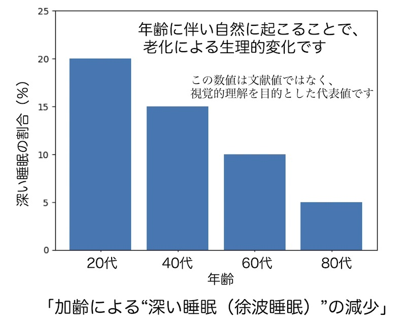
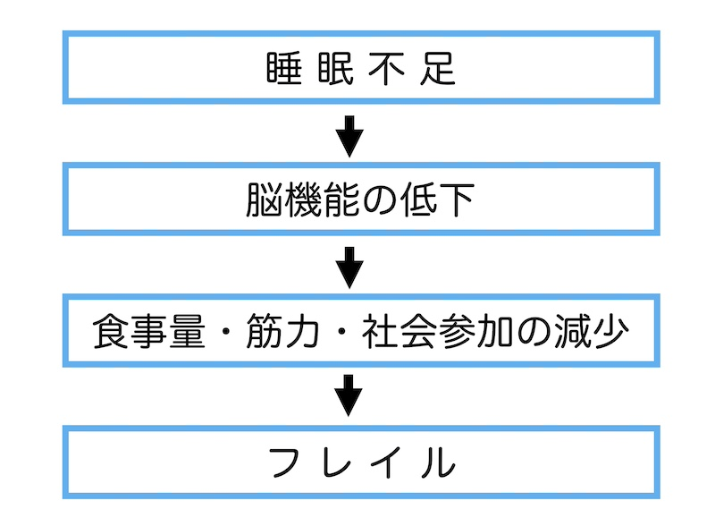
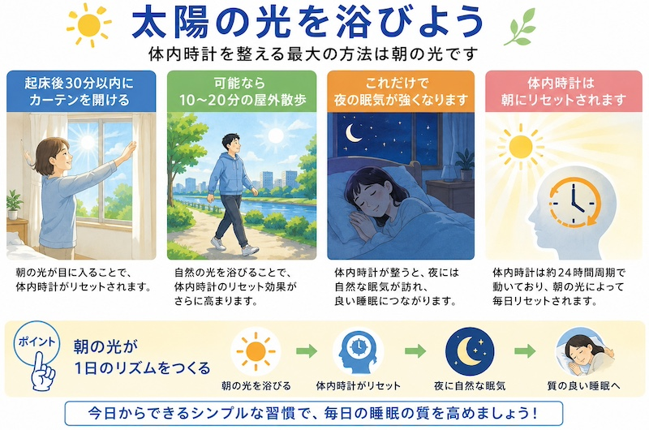
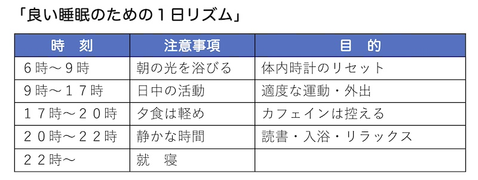

公開日：2026年8月｜最終更新：2026年8月
「ショートスリーパー」と言われる人がごく少数存在します。睡眠時間が4、５時間未満で、日中にも眠気を催さず、長期的に健康障害もみられない人たちです。
自分はショートスリーパーだと思っている人の多くは、日中に短時間「うたた寝（居眠り）」したり、週末にまとめて寝ているなど、無理をしており、「隠れ睡眠不足」の人が多いと言われています。
このような状態を続けていると、短期間でも危険です。例えば、脳の前頭葉の働きが低下し、ぼんやり、ミスが増え、反応が遅く、車の運転リスクが上昇するなどの症状が報告されています。
また、睡眠不足は扁桃体を過敏にし、感情面でも不安定になり、イライラ、落ち込み、怒りっぽくなるなど、トラブルの原因になるようです。
生理的にも、血糖値のコントロールが悪化し、甘いもの、炭水化物を余計に摂取してしまい「血糖値スパイク」を引き起こすこと、「免疫機能が低下」して風邪をひきやすくなること、高齢者では転倒リスクが上昇する、など障害があらわれます。
高齢者では、「必要な睡眠が減る」のではなく、「眠りの仕組みが変化する」ためです。
１）体内時計の前倒し
私たちの睡眠は、脳の視交叉上核が制御する「体内時計」によってコントロールされています。歳をとると、「夜早い時間に眠くなる」「朝早い時間に自然に目が覚める」という「前倒し」現象が起きることになり、体内時計通りに目が覚めるのです。
２）深い眠りが（徐波睡眠）減る
若い頃はぐっすりと深く眠れていたのに、加齢とともに、深い眠りが減少し、ちょっとした物音で目が覚めることになり、「熟睡感がない」状態になります。
３）メラトニン分泌の低下
「睡眠ホルモン」と呼ばれるメラトニンは加齢とともに分泌量が低下し、その結果、「寝つきが悪い」、「夜中に目が覚めやすい」という変化が起こります。
４）日中の活動量の低下（重要です！）
高齢になると、「外出機会の減少」「運動量の低下」「日光を浴びる時間の減少」の傾向になり、これにより、体内時計が弱くなり、「特に朝の光刺激が減ると」、体内時計のメリハリが弱まり、夜の眠気が弱くなります。「太陽の光を浴びましょう！！」
５）夜間トイレ（夜間頻尿）
高齢者では、前立腺肥大（男性）や膀胱容量の低下（膀胱の柔らかさの低下）などにより、トイレに起きることが増え、一度目が覚めると再入眠が難しくなります。それを防止するために水分を減らすと、夜間の脱水症状も心配されますので、寝る前のコップ１杯の水は必要です。
以上のような、現象により、高齢者の方の睡眠が短く、かつ、質の低下が起こります。

１）転倒リスクの増加
睡眠不足により、前頭葉の働きが低下し、「注意力低下」「反応時間の遅れ」「バランス能力の低下」「ふらつき」が起き、夜間のトイレ時には、周りの暗さも加わり「転倒リスク」が上昇します。睡眠不足により、「下肢筋力の回復の妨げ」「筋肉の修復ホルモン（成長ホルモン）の分泌低下」が起こることになります。
２）認知機能低下
睡眠中の脳では、「記憶の整理」「情報の統合」「老廃物の除去（グリンパティック機構）」が行われています。睡眠不足が続くと、「物忘れ増加」「集中力低下」「判断力低下」「意欲低下」が起こります。特に、深いノンレム睡眠（徐波睡眠）では、脳内の老廃物（アミロイドβなど）の除去が行われます。
３）フレイル進行
睡眠不足は、「食欲ホルモンの異常」「血糖コントロールの悪化」「活動量の低下」「抑うつ傾向」を引き起こし、その結果、「食事量の減少」「筋力の低下」「外出の減少」「社会参加の減少」という、まさに「フレイル」を進行させる、「負の連鎖」が始まります。

(1) 朝の光を浴びる（最重要）
体内時計を整える最大の方法は「朝の光」です。
起床後30分以内にカーテンを開ける
可能なら10～20分の屋外散歩
これだけで夜の眠気が強くなります。体内時計は“朝にリセット”されます。

(2) 日中の適度な運動
軽い運動は深い睡眠を増やします。
夕方までに実施し、軽い散歩や体操で十分です。
(3) 夕方以降の光を弱める
メラトニンは「暗さ」で分泌されます。
夜は暖色系照明にし、テレビやスマホは就寝１時間前に控え、特に強い白色LEDは覚醒を促します。
(4) 入眠前のマインドフルネス（一定の効果が報告されています）
マインドフルネスは、交感神経を鎮め、副交感神経を優位にします。
やり方は非常に簡単です。
【 呼吸観察法（3～5分）】
・仰向けで目を閉じる
・呼吸を「変えようとせず」観察する
・鼻から入る空気、出る空気を感じる
・考えが浮かんだら「考えている」と気づき、戻る
ここで、「眠ろうとしないこと」がコツです。眠ろうとすると交感神経が上がります。
(5) 筋弛緩法（高齢者向き）
ゆっくり体に力を入れて抜く方法です。
【例】
・足の指に５秒力を入れる
・スッと抜く
・ふくらはぎ → 太もも → 手 → 肩の順で！
これも副交感神経を高め、リラックスします。
(6) 「眠れない時間を怖がらない」
「実はこれが一番大切です。」
高齢者では、
夜中に目が覚めるのは自然
多少短くても昼間元気なら問題ない
と理解するだけで、不眠は改善することが多いです。
「眠れない＝異常」という思い込みが不眠を悪化させます。

| 栄養素 | 特徴 | 食材 |
|---|---|---|
| トリプトファン | セロトニン、メラトニンの材料 | 牛乳、大豆、卵、バナナ、チーズ（朝に） |
| ビタミンB6 | セロトニンの合成に必要 | マグロ、鰹、鶏肉、バナナ |
| マグネシウム | 神経、筋肉の興奮を抑える | ナッツ、海藻、玄米、大豆 |
| グリシン | 深部体温を下げ、入眠を助ける | ゼラチン、サプリで！ |
| ビタミンD | 体内時計の安定、気分安定 | きのこ、酵母など |
昼寝は、うまく取り入れれば、体と脳の疲れを回復させますが、ただし、取り方を誤ると、夜の眠りに影響します。
昼寝のポイントは、次のとおりです。
・20～30分まで
・午後３時ごろまで
・横にならなくても良い（深く眠らない）
・毎日同じ時間に（できれば）
昼寝は夜の睡眠を補う「第二の休息時間」と考えましょう。
人は、いったん「深部体温」が上がり、その後ゆっくり下がるときに眠くなります。
入浴は、この「体温のリズム」を整える方法の一つです。
効果的な入浴
１）温度：38～40℃の「ぬるめ」（42℃以上は交感神経を刺激する）
２）時間：就寝の１～２時間前（就寝直前は逆効果）
３）入浴時間：10～15分程度（長湯は疲労）
４）高齢者での注意点：
「急激な血圧変動に注意」、「冬場の脱衣所でのヒートショック」、「入浴後の水分補給」です。さらに、「入浴前後の急な立ち上がりにも注意しましょう（起立性低血圧）」。
「夜の入浴は、眠りの準備になります。」
眠れない日が続くと、不安になり、睡眠薬に頼りたくなることがあります。
睡眠薬は、つらい不眠を和らげるための大切な医療手段の一つです。従って、医療関係者に相談されることをお勧めします。
(1) 睡眠薬のメリット
薬の種類によって作用は異なりますが、「入眠を助ける」「夜間覚醒を減らす」「不安を軽減する」など、適切に用いれば、生活の質を改善する助けになります。
(2) 高齢者で注意が必要なこと
高齢者では、「薬の代謝が遅れる」「効果が翌朝まで残ることがある」「ふらつきや転倒のリスクが増える」などが起こります。
特に、「夜間トイレ時の転倒」や「ぼんやりによる事故」、また「長期使用で減量が難しくなることがあります」には、注意が必要です。
年をとると、眠り方は変わります。
若い頃と同じように眠れないのは、自然なことです。
大切なのは、
「眠れない」と怖がることではなく、
体の変化を理解し、整えていくことです。
睡眠は、転ばない体、動ける体、考えられる脳の土台です。
しかし、完璧である必要はありません。
眠れない夜があっても、
目を閉じて横になっているだけでも体は休んでいます。
朝の光を浴び、日中を活動的に過ごし、
夜は静かに心を落ち着ける。
その積み重ねが、自然な眠りにつながります。
睡眠は「努力して勝ち取るもの」ではなく、
環境を整えれば、体が思い出してくれるものです。
焦らず、怖がらず、
ご自身の眠りと、上手につきあっていきましょう。
はじめに：Krause et al. Nat Rev Neurosci (2017)（睡眠不足の影響）
第１章：Ohayon MM et al. Sleep (2004)（加齢と睡眠）
第２章：Xie L et al. Science (2013)（認知機能・グリンパディッグ機構）
第３章：Ong JC et al. Sleep Med Rev (2018)（マインドフルネス）
第５章：Haghayegh S et al. Sleep Med Rev（2019）（就寝前入浴）
第６章：American Geriatrics Society Beers Criteria 2019 Update（睡眠薬）
マインドフルネスは効果があるのか？
研究では、
・入眠時間短縮
・不眠症改善
・不安軽減
が報告されています。
睡眠薬のような即効性はありませんが、副作用がなく、高齢者にも安全です。